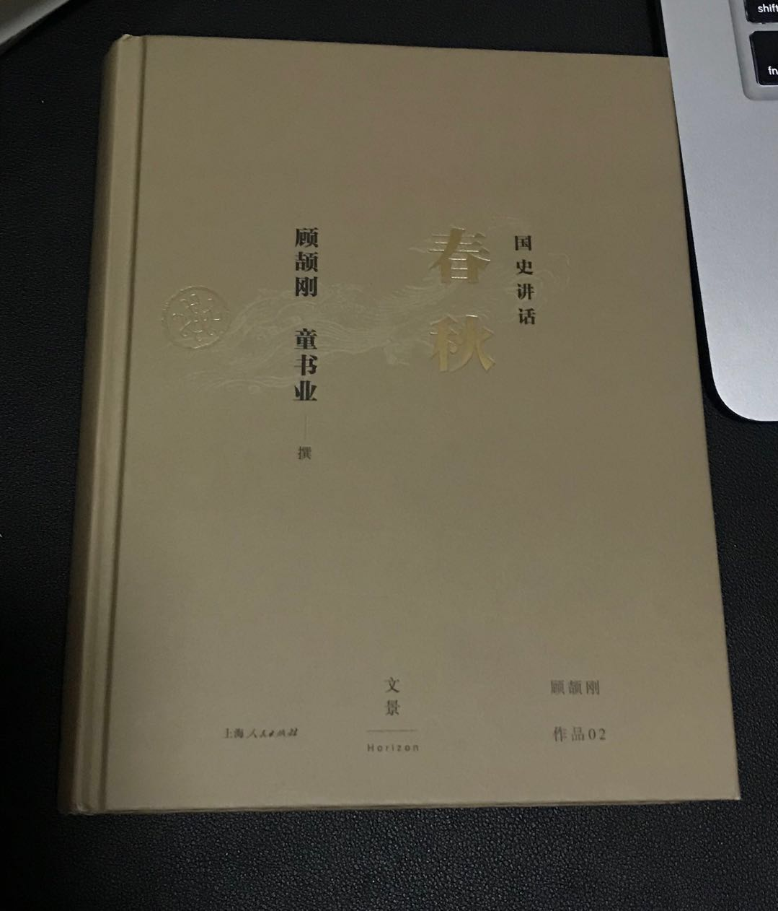
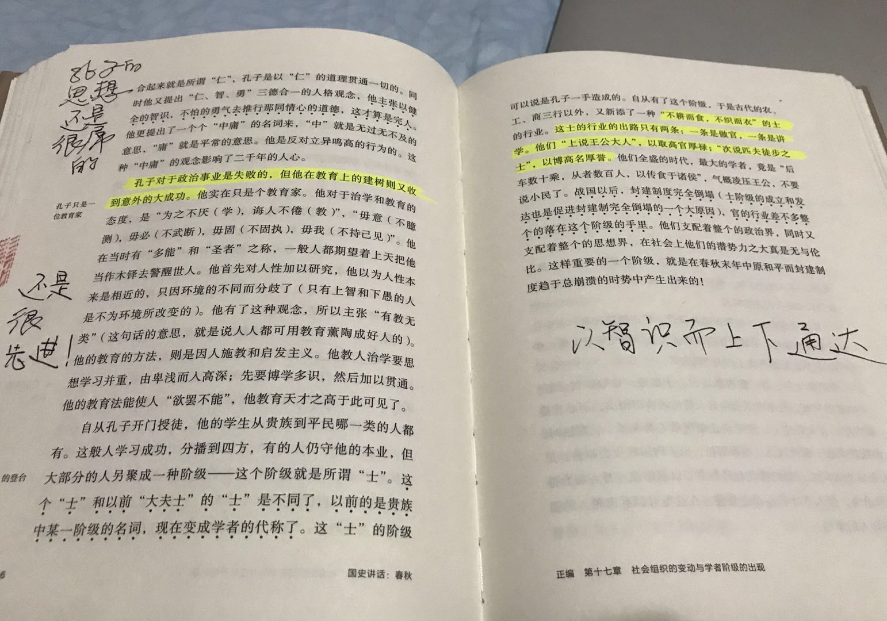

《春秋》碎语
王福强 著
读得这一本，虽然感觉很多地方描述的情节比较混乱， 但多少有些内容值得摘录，所以有了此篇…

鲁X公N年的梗儿
《春秋》是鲁国人写的，所以年份都以鲁国为准，但从春秋列国整体看，就有些别扭。
孔子
从政或许失败，但作为教育家， 孔子的思想至今应该无出其右者。
鲁国的臧文仲能够立言垂世， 郑国的子产能够有很开明的思想， 并且施之于实际的政治， 这些人也都属于春秋时期不世出的圣贤。
倒霉的公子买， 被卖的经理人
夹在晋楚两大国之间，鲁国公为了自身利益，可耻的出卖了替他带兵打仗的公子买，实在有些无耻。
故事大体上是这样的： 卫国与楚国相近， 鲁国派兵救卫，但又惧怕晋国，所以又不想救卫，同时还不想薄了楚国的面子，这可咋整？ 把所有责任一推六二五， 让公子买当替罪羊， 把公子买杀了之后， 对晋说公子买不听指挥，对楚说公子买消极怠工， 呜呼，倒霉的公子买成了被人出卖的经理人！
秦穆公的胸怀
孟明视军争多次失败，依然给与信任和重用，此等君主的胸怀，值得所有领导者学习。
下属需要通过试错才能成长，所以， 作为领导者也需要有耐心来包容试错。
围魏救赵也好， 远交近攻也罢
在春秋时代就有案例，所以战国时期的战例多少应该从中有所借鉴吧！
郑庄公时代挟天子以令诸侯，就采用了远交(齐、鲁)近攻（宋、卫）的政策，努力经营，国际地位持续上升。
多行不义必自毙
郑庄公真jb沉得住气， timing is the most important thing.
鱼丽之阵
郑国的鱼丽之阵，算是步坦协同战术的始祖吗？
内外兼修还是内外交困
内外兼修，国势强盛； 内外交困，国势衰微。列国纷争，很多国家都是因为内乱而终止了强盛的势头。
尊王攘夷， 尊王是为了巩固内部关系， 攘夷是为了对外扩展疆土； 尊王是团结本族的手段， 攘夷是抵御外寇的口号。
能够兼修的，一般都发展的不错。
大部分只能顾一头。
挟天子以令诸侯
出师有名很重要！ 出师无名死得早！最好的结局是无功而返，灰头土脸。而像齐桓公攻卫那样， 以王命（东周王）攻卫，责卫， 然后还拿了贿赂之后才罢兵， 这tnd算是名利双收的特例了。
当然， 有些时候也别真把自己太当回事， 周天子后期真正实力已经消失殆尽， 却表面上依然表现的威严和煊赫，其实是因为所有诸侯都在玩“尊王”的权术，而所谓的“王”，也只是一个供着的工具而已。在“我们要不惜一切代价如何如何”中，自己要搞清楚自己到底是“我们”，还是“代价”…
像楚灵王得国不正， 又暴虐臣下， 穷兵黩武， 搞得内外交怨，大乱骤起， 说白了也是名分不够，否则起码统治期间会长很多。
假道伐虢
体现的其实是谋士的悲哀，宫之奇再聪明和有智谋，也架不住国君SB， 看破了，进谏了， 君主不听，依然没有鸟用，所以晋国先借道灭了虢国， 回头再顺道灭了宫之奇所在的虞国。
虞国纵有宫之奇和百里奚这样的智慧之人， 却只能去他国谋求发展， 对于不尊重人才的虞国（以及战国时候的魏国）， 死了也不足惜呀！
无信的晋惠公
SB秦惠公不懂“无信则不立”的道理， 回国掌权之前明明求助于秦国并许诺了人家好处， 等秦国帮助他复位，他除去内部威胁之后，却想赖掉送给秦国的好处， 从而内外对他都不满意，终归没有落得个好下场。
一姓不再兴
春秋是有一种迷信，叫做“一姓不再兴”， 是说一国被灭了之后， 就不能重新兴起来了， 如果勉强去兴复已灭的国， 就要得罪上天。
反清复明确实从来没有成过 ;0)
上下同心熬苦 VS. 上下交相逐利
孟子曰： 上下交相逐利， 国亡， 实际上是说没有民族性和价值观的利益群体其实是很脆弱的。
楚国有段时间被人家追的到处逃窜，迁都来，迁都去，最后有大夫反对迁都说： “我们能去， 敌人岂不能去？我们愈退让， 敌人就愈进攻， 不如尽力抵抗。敌人见我们随遭荒年， 仍能出兵， 野心或许会消失。” ， 楚庄王听之，上下同心熬苦，终于得以崛起， 甚至还问鼎中原。
灭此朝食
齐候的这句“灭此朝食”虽然豪迈，结局却是失败告终，哈哈
势均力敌的时候， 很难说决心和信心就是取胜的关键。
春秋五霸
不同史书不同观点，按照手头上这本《国史讲话-春秋》来看，是下面五位：
- 齐桓公 - 姜小白
- 晋文公
- 楚庄王
- 吴王阖闾
- 越王勾践
附录
- 亡臣 ： 逃亡之臣
- 殷以前是神话时代， 比如降福的神叫勾芒。
「为AI疯狂」星球上，扶墙老师正在和朋友们讨论有趣的AI话题，你要不要⼀起来呀？^-^
这里
- 不但有及时新鲜的AI资讯和深度探讨
- 还分享AI工具、产品方法和商业机会
- 更有体系化精品付费内容等着你，加入星球(https://t.zsxq.com/0dI3ZA0sL) 即可免费领取。(加入之后一定记得看置顶消息呀！)

存量的时代，省钱就是赚钱。
在增量的时代，省钱其实是亏钱。
避坑儿是省钱的一种形式，更是真正聪明人的选择！
弯路虽然也是路，但还是能少走就少走，背后都是高昂的试错成本。
订阅「福报」，少踩坑，少走弯路，多走一步，就是不一样的胜率！